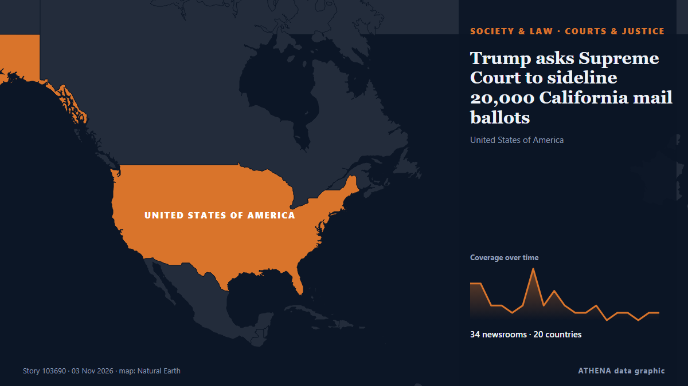

Trump asks Supreme Court to sideline 20,000 California mail ballots

President Donald Trump's administration appealed to the Supreme Court on Monday in its push to sideline thousands of disputed California mail ballots the day before the pivotal midterm elections. από The Korea Times
Αναφέρθηκε ανεξάρτητα από 34 μέσα σε 20 χώρες από τις 2 Νοε, πρώτο το NPR· η κάλυψη κορυφώνεται. Το ATHENA εκτιμά τον κίνδυνο μέτριο (2.0/10), κυρίως λόγω της σοβαρότητάς του και της εμβέλειάς του. Βεβαιότητα 85% (υψηλή): το επιβεβαιώνουν 34 ανεξάρτητα μέσα, μέση αξιοπιστία 74%. Μέσα ανά χώρα: Ηνωμένες Πολιτείες (12), Τουρκία (3), Ηνωμένο Βασίλειο (3). Κάλυψη: 2 Νοε έως 3 Νοε, 21 ώρες.
Γιατί έχει σημασία: Οι νομικές αλλαγές και οι αλλαγές πολιτικής μεταβάλλουν δικαιώματα, υποχρεώσεις και δημόσιες υπηρεσίες για όσους αφορούν.
Τι άλλαξε: 41 νέες αναφορές από 34 μέσα στο 24ωρο έως 3 Νοε.
Πρώτη διατύπωση: DOJ asks for Supreme Court to intervene on California ballot demands
Οι τίτλοι των ειδήσεων παρουσιάζονται στα αγγλικά, όπως δημοσιεύτηκαν.
Με μια ματιά
Επιλέγεται, βαθμολογείται και γράφεται από τη δημοσιευμένη μεθοδολογία του ATHENA. Κανένας συντάκτης δεν παρεμβαίνει σε μεμονωμένα γεγονότα. Πώς παράγεται ›
| 02 Nov 16:34 UTC | 5 |
|---|---|
| 02 Nov 17:34 UTC | 5 |
| 02 Nov 18:34 UTC | 2 |
| 02 Nov 19:34 UTC | 2 |
| 02 Nov 20:34 UTC | 1 |
| 02 Nov 21:34 UTC | 2 |
| 02 Nov 22:34 UTC | 7 |
| 02 Nov 23:34 UTC | 2 |
| 03 Nov 00:34 UTC | 4 |
| 03 Nov 01:34 UTC | 2 |
| 03 Nov 02:34 UTC | 1 |
| 03 Nov 03:34 UTC | 1 |
| 03 Nov 04:34 UTC | 2 |
| 03 Nov 05:34 UTC | 0 |
| 03 Nov 06:34 UTC | 1 |
| 03 Nov 07:34 UTC | 1 |
| 03 Nov 08:34 UTC | 0 |
| 03 Nov 09:34 UTC | 1 |
| 03 Nov 10:34 UTC | 1 |
| 03 Nov 11:34 UTC | 0 |
| 03 Nov 12:34 UTC | 0 |
| 03 Nov 13:34 UTC | 1 |
Γιατί αυτοί οι αριθμοί
Σημασία
Κίνδυνος
Βεβαιότητα
Η κάλυψη — ποιος το ανέφερε και πότε
ο τίτλος όπως δημοσιεύτηκε · ανοίγει το πρωτότυπο- NPR · Ηνωμένες ΠολιτείεςThe Supreme Court rejects a DOJ push to separate California ballots
- The Straits Times · ΣιγκαπούρηUS Supreme Court rejects Trump administration in California ballot fight
- The Hill · Ηνωμένες ΠολιτείεςTrump administration brings California ballot fight to Supreme Court
- CNBC World · Ηνωμένες ΠολιτείεςSupreme Court rejects DOJ's bid to block California from counting disputed ballots
- The Korea Times · Νότια ΚορέαTrump asks Supreme Court to sideline 20,000 California mail ballots
- PBS NewsHour · Ηνωμένες ΠολιτείεςTrump administration appeals to Supreme Court to sideline 20,000 disputed California mail ballots
- Anadolu Agency (English) · ΤουρκίαTrump administration asks Supreme Court to segregate 20,000 California mail ballots over noncitizen voting claims
- Courthouse News · Ηνωμένες ΠολιτείεςTrump asks Supreme Court for help in bid to set aside California ballots
- CBC News · ΚαναδάςU.S. Supreme Court rejects Trump administration's bid to set aside California mail ballots
- SCOTUSblog · Ηνωμένες ΠολιτείεςSupreme Court declines Trump administration's request to intervene in California ballot dispute
- Al Jazeera English · ΚατάρSupreme Court rejects Trump request to set aside California ballots
- DW English · ΓερμανίαSupreme Court rejects Trump bid to block 20,000 California ballots
- Forbes Business · Ηνωμένες ΠολιτείεςCould Supreme Court Impact The Midterms? California Ballot Case Could Be First Of Many At High Court
- ABC News Australia · ΑυστραλίαDaily briefing: Trump administration appeals to court in California ballots stoush
- The Daily Star — page reader · ΜπανγκλαντέςTrump administration takes California ballot fight to Supreme Court
- The Independent · Ηνωμένο ΒασίλειοNewsom braces for ‘grave’ election threat after Supreme Court shoots down Trump’s California ballot battle
- Free Malaysia Today · ΜαλαισίαTrump admin asks top court to set aside 20,000 California ballots
- The Hill · Ηνωμένες ΠολιτείεςSupreme Court rejects Trump administration's bid to set aside 20,000 California ballots
- The Guardian · Ηνωμένο ΒασίλειοSupreme court rules against Trump over bid to force California to set aside ballots
- Deadline · Ηνωμένες ΠολιτείεςTrump Loses At SCOTUS As High Court Rejects California Noncitizens Voting Request On Midterms Eve
- NDTV · ΙνδίαUS Supreme Court Rejects Trump's Push To Set Aside California Ballots
- Anadolu Agency (English) · ΤουρκίαUS Supreme Court rejects bid by Trump administration to set aside 20,000 California ballots
- Forbes Business · Ηνωμένες ΠολιτείεςSupreme Court Turns Down Trump Administration’s Request In California Ballot Dispute
- Arab News · Σαουδική ΑραβίαSupreme Court rejects Trump administration push to set aside thousands of California ballots
- FBC News · ΦίτζιTrump administration takes California ballot fight to Supreme Court
- TRT World · ΤουρκίαUS Supreme Court rejects request by Trump admin to block California mail-in ballots
- Ada Derana · Σρι ΛάνκαUS Supreme Court rejects Trump, lets California count all ballots
- New Straits Times · ΜαλαισίαUS Supreme Court rejects Trump bid to set aside 20,000 California ballots
- KQED News (San Francisco) · Ηνωμένες ΠολιτείεςSupreme Court Declines to Hear Trump’s California 20,000 Ballot Case. Here’s What to Know
- Rappler · ΦιλιππίνεςUS Supreme Court rejects Trump, lets California count all ballots
- Times of India · ΙνδίαUS Supreme Court rejects Trump's push to isolate 20,000 California ballots
- BBC News · Ηνωμένο ΒασίλειοSupreme Court rejects Trump's request to stop California counting disputed votes
- Xinhua (English) — page reader · ΚίναU.S. Supreme Court rejects White House's bid to temporarily block California mail-in ballot count
- Capital FM · ΚένυαSupreme Court rejects Trump’s request to stop California counting disputed votes
- Express Tribune · ΠακιστάνUS Supreme Court rejects Trump, lets California count all ballots
- News of Bahrain · ΜπαχρέινUS Supreme Court Rejects Trump Bid to Block California Mail-In Ballots
- AllAfrica · AFRKenya: Supreme Court Rejects Trump's Request to Stop California Counting Disputed Votes
- SCOTUSblog · Ηνωμένες ΠολιτείεςCourt won’t intervene in California ballot dispute